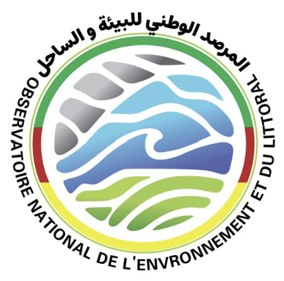

Portail SIG pour le suivi environnemental et littoral
Ce portail permet d’accéder aux cartes interactives, tableaux de bord et données SIG de l’Observatoire National de l’Environnement et du Littoral.
Consulter les cartesAccéder aux cartes interactives de l’Observatoire National de l’Environnement et du Littoral.
Observatoire National de l'Environnement et du Littoral
Adresse : Nouakchott, Mauritanie
Email : contact@onel.mr
Téléphone : +222 XX XX XX XX
Visiter le site officielSuivi des zones sensibles, ressources naturelles et indicateurs environnementaux.
Visualisation des zones côtières, risques littoraux et occupation du sol.
Indicateurs, statistiques et suivi dynamique des données environnementales.
Application ArcGIS Online dédiée à la consultation et à l’analyse spatiale.
Suivi des zones sensibles, ressources naturelles et indicateurs environnementaux.
L’Observatoire National de l’Environnement et du Littoral est une plateforme dédiée au suivi, à l’analyse et à la valorisation des données environnementales et littorales à travers les outils SIG, la télédétection et les tableaux de bord cartographiques.
Ce portail SIG permet de centraliser les cartes interactives, les indicateurs, les tableaux de bord et les applications cartographiques afin d’appuyer la prise de décision, le suivi des zones sensibles et la gestion durable du territoire.
Observation des ressources naturelles, zones sensibles et indicateurs environnementaux.
Analyse des zones côtières, risques littoraux et dynamiques marines.
Valorisation des données spatiales pour la cartographie et l’analyse territoriale.